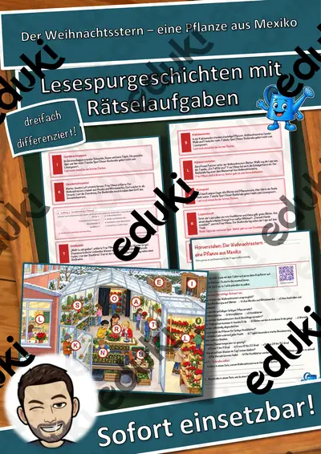
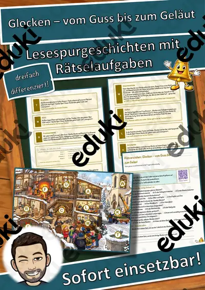
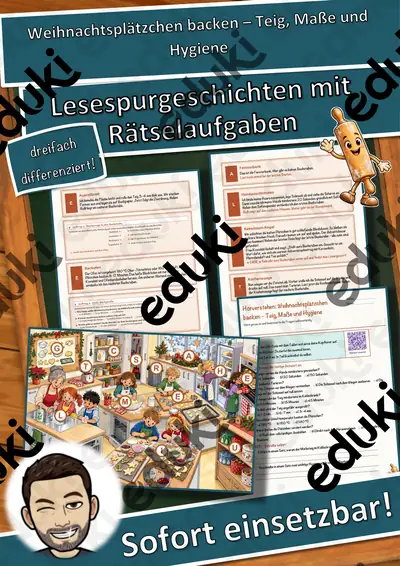
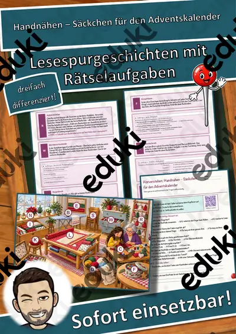
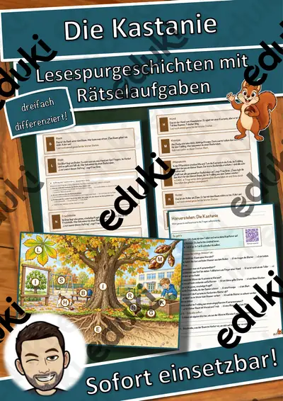
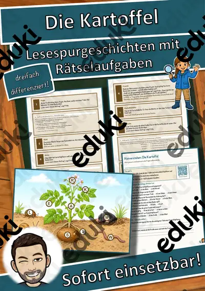
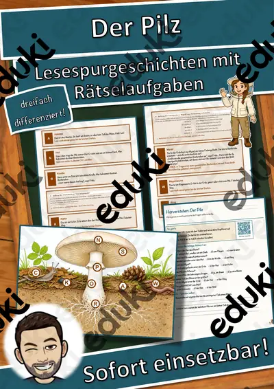
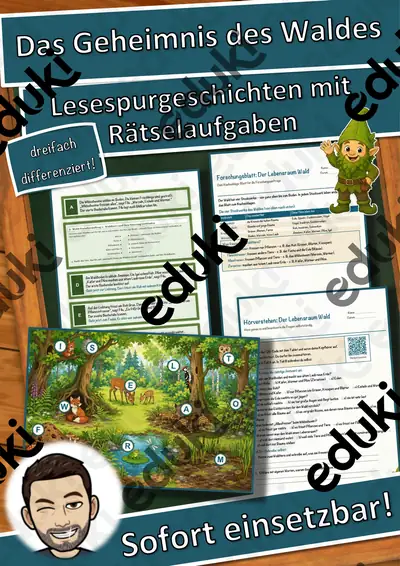

Materialpaket Advent für die 5. Klasse: 3 Lesespurgeschichten mit Rätselaufgaben (Weihnachtsstern, Plätzchen backen, Handnähen)

Der Hund – unser treues Haustier – Lesespurgeschichte mit Rätselaufgaben (Klasse 5)

Der Tag der Muttersprache – viele Sprachen in meiner Klasse – Lesespurgeschichte mit Rätselaufgaben (Klasse 5)

Der Nistkasten – ein Zuhause für Meisen bauen – Lesespurgeschichte mit Rätselaufgaben (Klasse 5)

Das Frühlingsfest – Neujahr in China – Lesespurgeschichte mit Rätselaufgaben (Klasse 5)

Sicher schneiden – Krallengriff, Brückengriff und eine Gemüsesuppe – Lesespurgeschichte mit Rätselaufgaben (Klasse 5)

Der Weihnachtsstern – eine Pflanze aus Mexiko – Lesespurgeschichte mit Rätselaufgaben (Klasse 5)

Die Holzbläser – Flöte, Klarinette, Oboe und Fagott – Lesespurgeschichte mit Rätselaufgaben (Klasse 5)

Kaninchen und Meerschweinchen artgerecht halten – Lesespurgeschichte mit Rätselaufgaben (Klasse 5)

Glocken – vom Guss bis zum Geläut – Lesespurgeschichte mit Rätselaufgaben (Klasse 5)

Weihnachtsplätzchen backen – Teig, Maße und Hygiene – Lesespurgeschichte mit Rätselaufgaben (Klasse 5)

Handnähen – Säckchen für den Adventskalender – Lesespurgeschichte mit Rätselaufgaben (Klasse 5)

Wassily Kandinsky – wenn Farben klingen – Lesespurgeschichte mit Rätselaufgaben (Klasse 5)

Rekorde beim Erntefest – Längen, Gewichte und Größen umrechnen – Lesespurgeschichte mit Rätselaufgaben (Klasse 5)

Vom Feld in den Laden – der Weg des Apfels – Lesespurgeschichte mit Rätselaufgaben (Klasse 5)

Die Tastatur – Zehnfingersystem und Tastenkürzel – Lesespurgeschichte mit Rätselaufgaben (Klasse 5)

E-Mails und Netiquette – höflich und sicher schreiben – Lesespurgeschichte mit Rätselaufgaben (Klasse 5)

Suchmaschinen – richtig suchen und finden – Lesespurgeschichte mit Rätselaufgaben (Klasse 5)

Dateien und Ordner – Ordnung auf dem Computer – Lesespurgeschichte mit Rätselaufgaben (Klasse 5)

Programmieren mit Blöcken – meine erste Animation – Lesespurgeschichte mit Rätselaufgaben (Klasse 5)

Algorithmen im Alltag – Schritt für Schritt zum Ziel – Lesespurgeschichte mit Rätselaufgaben (Klasse 5)

Tanzen in der Schule – Rhythmus und Bewegung – Lesespurgeschichte mit Rätselaufgaben (Klasse 5)

Inline-Skaten – sicher rollen, bremsen, fallen – Lesespurgeschichte mit Rätselaufgaben (Klasse 5)

Rückschlagspiele – Federball, Tischtennis und Tennis – Lesespurgeschichte mit Rätselaufgaben (Klasse 5)

Gefäße aus Ton – Aufbaukeramik – Lesespurgeschichte mit Rätselaufgaben (Klasse 5)

Collage und Materialbild – Kunst aus Papier, Stoff und Knöpfen – Lesespurgeschichte mit Rätselaufgaben (Klasse 5)

Masken gestalten – Gesichter verwandeln – Lesespurgeschichte mit Rätselaufgaben (Klasse 5)

Höhlenmalerei – die ersten Künstler – Lesespurgeschichte mit Rätselaufgaben (Klasse 5)

Essen verbindet – Speiseregeln und Fasten in den Religionen – Lesespurgeschichte mit Rätselaufgaben (Klasse 5)

Jeder sieht die Welt anders – Wahrnehmung und Blickwinkel – Lesespurgeschichte mit Rätselaufgaben (Klasse 5)

Gewinnen, verlieren, mitspielen – Werte beim Spielen – Lesespurgeschichte mit Rätselaufgaben (Klasse 5)

Zusammenleben in der Familie – Lesespurgeschichte mit Rätselaufgaben (Klasse 5)

Feste der Weltreligionen – Lesespurgeschichte mit Rätselaufgaben (Klasse 5)

Der Farbkreis – Lesespurgeschichte mit Rätselaufgaben (Klasse 5)

Das Vogelfutterhaus – Lesespurgeschichte mit Rätselaufgaben (Klasse 5)

Die Klangwerkstatt – Lesespurgeschichte mit Rätselaufgaben (Klasse 5)

Der Nationalpark – Lesespurgeschichte mit Rätselaufgaben (Klasse 5)

Das Spiegelkabinett – Lesespurgeschichte mit Rätselaufgaben (Klasse 5)

Das Naturkundemuseum – Lesespurgeschichte mit Rätselaufgaben (Klasse 5)

Das Planetarium – Lesespurgeschichte mit Rätselaufgaben (Klasse 5)

Das Schattentheater – Lesespurgeschichte mit Rätselaufgaben (Klasse 5)

Das Wasserlabor – Lesespurgeschichte mit Rätselaufgaben (Klasse 5)

Das Luftlabor – Lesespurgeschichte mit Rätselaufgaben (Klasse 5)

Die Kastanie – Lesespurgeschichte mit Rätselaufgaben (Klasse 5)

Das Schaf – Lesespurgeschichte mit Rätselaufgaben (Klasse 5)

Der Specht – Lesespurgeschichte mit Rätselaufgaben (Klasse 5)

Die Kuh – Lesespurgeschichte mit Rätselaufgaben (Klasse 5)

Das Pferd – Lesespurgeschichte mit Rätselaufgaben (Klasse 5)

Die Kartoffel – Lesespurgeschichte mit Rätselaufgaben (Klasse 5)

Der Pilz – Lesespurgeschichte mit Rätselaufgaben (Klasse 5)

Der Maulwurf – Lesespurgeschichte mit Rätselaufgaben (Klasse 5)

Das Eichhörnchen – Lesespurgeschichte mit Rätselaufgaben (Klasse 5)

Die Ente – Lesespurgeschichte mit Rätselaufgaben (Klasse 5)

Die Schnecke – Lesespurgeschichte mit Rätselaufgaben (Klasse 5)

Die Fledermaus – Lesespurgeschichte mit Rätselaufgaben (Klasse 5)

Der Fisch – Lesespurgeschichte mit Rätselaufgaben (Klasse 5)

Die Biene – Lesespurgeschichte mit Rätselaufgaben (Klasse 5)

Die Spinne – Lesespurgeschichte mit Rätselaufgaben (Klasse 5)

Der Boden – Lesespurgeschichte mit Rätselaufgaben (Klasse 5)

Der Frosch – Lesespurgeschichte mit Rätselaufgaben (Klasse 5)

Die Turnhalle – Ein Tag beim Geräteturnen – Lesespurgeschichte mit Rätselaufgaben (Klasse 5)

Die Zaubershow – Hinter den Kulissen der Magie – Lesespurgeschichte mit Rätselaufgaben (Klasse 5)

Der Zoo – Ein Tag bei den Tieren – Lesespurgeschichte mit Rätselaufgaben (Klasse 5)

Der Strand – Ein Tag am Meer – Lesespurgeschichte mit Rätselaufgaben (Klasse 5)

Das Bergwerk – Ein Abenteuer unter Tage – Lesespurgeschichte mit Rätselaufgaben (Klasse 5)

Der Zirkus – Ein Tag in der Manege – Lesespurgeschichte mit Rätselaufgaben (Klasse 5)

Der Pirat – Ein Abenteuer auf hoher See – Lesespurgeschichte mit Rätselaufgaben (Klasse 5)

Die Orientierung – Schatzsuche mit Kompass und Karte – Lesespurgeschichte mit Rätselaufgaben (Klasse 5)

Der Bahnhof – Eine Reise mit der Bahn – Lesespurgeschichte mit Rätselaufgaben (Klasse 5)

Das Papier – Vom Baum zum Papier – Lesespurgeschichte mit Rätselaufgaben (Klasse 5)

Die Wolle – Vom Schaf zum Pullover – Lesespurgeschichte mit Rätselaufgaben (Klasse 5)

Der Hund – ein treues Haustier – Lesespurgeschichte mit Rätselaufgaben (Klasse 5)

Der Nachthimmel – Eine Reise zu den Sternen – Lesespurgeschichte mit Rätselaufgaben (Klasse 5)

Die Pflanze – Vom Samen zur Frucht – Lesespurgeschichte mit Rätselaufgaben (Klasse 5)

Das Brot – Vom Korn zum Brot – Lesespurgeschichte mit Rätselaufgaben (Klasse 5)

Die Wahl in der Klasse – Lesespurgeschichte mit Rätselaufgaben (Klasse 5)

Sicher unterwegs im Verkehr – Lesespurgeschichte mit Rätselaufgaben (Klasse 5)

Mission Energiesparen – Lesespurgeschichte mit Rätselaufgaben (Klasse 5)

Der Weg des Sonnenstrahls (Sonne und Erde) – Lesespurgeschichte mit Rätselaufgaben (Klasse 5)

Auf hoher See – Lesespurgeschichte mit Rätselaufgaben (Klasse 5)

Die Reise um die Erde – Lesespurgeschichte mit Rätselaufgaben (Klasse 5)

Die große Länderrallye – Lesespurgeschichte mit Rätselaufgaben (Klasse 5)

Ein Tag in den Alpen – Lesespurgeschichte mit Rätselaufgaben (Klasse 5)

Auf den Spuren der Alpen – Lesespurgeschichte mit Rätselaufgaben (Klasse 5)

Die Umwelt-Detektive – Lesespurgeschichte mit Rätselaufgaben (Klasse 5)

Das Geheimnis der fünf Sinne – Lesespurgeschichte mit Rätselaufgaben (Klasse 5)

Das Geheimnis des Wattenmeers – Lesespurgeschichte mit Rätselaufgaben (Klasse 5)

Das Geheimnis des Teichs – Lesespurgeschichte mit Rätselaufgaben (Klasse 5)

Das Geheimnis des Waldes (Lebensraum Wald) – Lesespurgeschichte mit Rätselaufgaben (Klasse 5)

Das Geheimnis der Pyramide (Ägypten) – Lesespurgeschichte mit Rätselaufgaben (Klasse 5)

Jagd auf das Mammut – Lesespurgeschichte mit Rätselaufgaben (Klasse 5)

Die Reise zu den ersten Bauern – Lesespurgeschichte mit Rätselaufgaben (Klasse 5)

Die Reise in die Steinzeit – Lesespurgeschichte mit Rätselaufgaben (Klasse 5)

Gruselgeschichten schreiben: Schreibwerkstatt mit Hilfen

Waschbrett Lückentext mit Wortspeicher Hörverstehen und Suchsel

Röhrenglocken Lückentext mit Wortspeicher Hörverstehen und Suchsel

Kazoo Lückentext mit Wortspeicher Hörverstehen und Suchsel

Guiro Lückentext mit Wortspeicher Hörverstehen und Suchsel

Gong Lückentext mit Wortspeicher Hörverstehen und Suchsel

Drumcomputer Lückentext mit Wortspeicher Hörverstehen und Suchsel

Claves Lückentext mit Wortspeicher Hörverstehen und Suchsel

Zither Lückentext mit Wortspeicher Hörverstehen und Suchsel

Waldhorn Lückentext mit Wortspeicher Hörverstehen und Suchsel

Vuvuzela Lückentext mit Wortspeicher Hörverstehen und Suchsel

Vibraphon Lückentext mit Wortspeicher Hörverstehen und Suchsel

Triangel Lückentext mit Wortspeicher Hörverstehen und Suchsel

Theremin Lückentext mit Wortspeicher Hörverstehen und Suchsel

Tamtam Lückentext mit Wortspeicher Hörverstehen und Suchsel

Tamburin Lückentext mit Wortspeicher Hörverstehen und Suchsel

Tabla Lückentext mit Wortspeicher Hörverstehen und Suchsel

Synthesizer Lückentext mit Wortspeicher Hörverstehen und Suchsel

Steeldrum Lückentext mit Wortspeicher Hörverstehen und Suchsel

Sousaphon Lückentext mit Wortspeicher Hörverstehen und Suchsel

Sitar Lückentext mit Wortspeicher Hörverstehen und Suchsel

Schellenring Lückentext mit Wortspeicher Hörverstehen und Suchsel

Schellenkranz Lückentext mit Wortspeicher Hörverstehen und Suchsel

Schalmei Lückentext mit Wortspeicher Hörverstehen und Suchsel

Sackpfeife Lückentext mit Wortspeicher Hörverstehen und Suchsel

Röhrentrommel Lückentext mit Wortspeicher Hörverstehen und Suchsel

Rassel Lückentext mit Wortspeicher Hörverstehen und Suchsel

Rahmentrommel Lückentext mit Wortspeicher Hörverstehen und Suchsel

Panflöte Lückentext mit Wortspeicher Hörverstehen und Suchsel

Oud Lückentext mit Wortspeicher Hörverstehen und Suchsel

Okarina Lückentext mit Wortspeicher Hörverstehen und Suchsel

Nyckelharpa Lückentext mit Wortspeicher Hörverstehen und Suchsel

Mundharmonika Lückentext mit Wortspeicher Hörverstehen und Suchsel

Melodica Lückentext mit Wortspeicher Hörverstehen und Suchsel

Maultrommel Lückentext mit Wortspeicher Hörverstehen und Suchsel

Marimba Lückentext mit Wortspeicher Hörverstehen und Suchsel

Maracas Lückentext mit Wortspeicher Hörverstehen und Suchsel

Mandoline Lückentext mit Wortspeicher Hörverstehen und Suchsel

Leier Lückentext mit Wortspeicher Hörverstehen und Suchsel

Laute Lückentext mit Wortspeicher Hörverstehen und Suchsel

Kuhglocke Lückentext mit Wortspeicher Hörverstehen und Suchsel

Koto Lückentext mit Wortspeicher Hörverstehen und Suchsel

Kornett Lückentext mit Wortspeicher Hörverstehen und Suchsel

Konzertina Lückentext mit Wortspeicher Hörverstehen und Suchsel

Klangschale Lückentext mit Wortspeicher Hörverstehen und Suchsel

Kastagnetten Lückentext mit Wortspeicher Hörverstehen und Suchsel

Kalimba Lückentext mit Wortspeicher Hörverstehen und Suchsel

Harmonium Lückentext mit Wortspeicher Hörverstehen und Suchsel

Handpan Lückentext mit Wortspeicher Hörverstehen und Suchsel

Hackbrett Lückentext mit Wortspeicher Hörverstehen und Suchsel

Glockenspiel Lückentext mit Wortspeicher Hörverstehen und Suchsel

Gambe Lückentext mit Wortspeicher Hörverstehen und Suchsel

Flügelhorn Lückentext mit Wortspeicher Hörverstehen und Suchsel

Euphonium Lückentext mit Wortspeicher Hörverstehen und Suchsel

Erhu Lückentext mit Wortspeicher Hörverstehen und Suchsel

E-Gitarre Lückentext mit Wortspeicher Hörverstehen und Suchsel

E-Bass Lückentext mit Wortspeicher Hörverstehen und Suchsel

Drehleier Lückentext mit Wortspeicher Hörverstehen und Suchsel

Djembe Lückentext mit Wortspeicher Hörverstehen und Suchsel

Didgeridoo Lückentext mit Wortspeicher Hörverstehen und Suchsel

Darbuka Lückentext mit Wortspeicher Hörverstehen und Suchsel

Conga Lückentext mit Wortspeicher Hörverstehen und Suchsel

Charango Lückentext mit Wortspeicher Hörverstehen und Suchsel

Cembalo Lückentext mit Wortspeicher Hörverstehen und Suchsel

Celesta Lückentext mit Wortspeicher Hörverstehen und Suchsel

Cajon Lückentext mit Wortspeicher Hörverstehen und Suchsel

Bouzouki Lückentext mit Wortspeicher Hörverstehen und Suchsel

Bongo Lückentext mit Wortspeicher Hörverstehen und Suchsel

Becken Lückentext mit Wortspeicher Hörverstehen und Suchsel

Banjo Lückentext mit Wortspeicher Hörverstehen und Suchsel

Bandoneon Lückentext mit Wortspeicher Hörverstehen und Suchsel

Balalaika Lückentext mit Wortspeicher Hörverstehen und Suchsel

Alphorn Lückentext mit Wortspeicher Hörverstehen und Suchsel

Ukulele Lückentext mit Wortspeicher Hörverstehen und Suchsel

Cadmium Lückentext mit Wortspeicher Hörverstehen und Suchsel

Germanium Lückentext mit Wortspeicher Hörverstehen und Suchsel

Zink Lückentext mit Wortspeicher Hörverstehen und Suchsel

Tenness Lückentext mit Wortspeicher Hörverstehen und Suchsel

Livermorium Lückentext mit Wortspeicher Hörverstehen und Suchsel

Moscovium Lückentext mit Wortspeicher Hörverstehen und Suchsel

Flerovium Lückentext mit Wortspeicher Hörverstehen und Suchsel

Nihonium Lückentext mit Wortspeicher Hörverstehen und Suchsel

Copernicium Lückentext mit Wortspeicher Hörverstehen und Suchsel

Roentgenium Lückentext mit Wortspeicher Hörverstehen und Suchsel

Darmstadtium Lückentext mit Wortspeicher Hörverstehen und Suchsel

Meitnerium Lückentext mit Wortspeicher Hörverstehen und Suchsel

Hassium Lückentext mit Wortspeicher Hörverstehen und Suchsel

Bohrium Lückentext mit Wortspeicher Hörverstehen und Suchsel

Seaborgium Lückentext mit Wortspeicher Hörverstehen und Suchsel

Dubnium Lückentext mit Wortspeicher Hörverstehen und Suchsel

Rutherfordium Lückentext mit Wortspeicher Hörverstehen und Suchsel

Fermium Lückentext mit Wortspeicher Hörverstehen und Suchsel

Lawrencium Lückentext mit Wortspeicher Hörverstehen und Suchsel

Nobelium Lückentext mit Wortspeicher Hörverstehen und Suchsel

Mendelevium Lückentext mit Wortspeicher Hörverstehen und Suchsel

Einsteinium Lückentext mit Wortspeicher Hörverstehen und Suchsel

Californium Lückentext mit Wortspeicher Hörverstehen und Suchsel

Berkelium Lückentext mit Wortspeicher Hörverstehen und Suchsel

Curium Lückentext mit Wortspeicher Hörverstehen und Suchsel

Americium Lückentext mit Wortspeicher Hörverstehen und Suchsel

Plutonium Lückentext mit Wortspeicher Hörverstehen und Suchsel

Rhodium Lückentext mit Wortspeicher Hörverstehen und Suchsel

Molybdän Lückentext mit Wortspeicher Hörverstehen und Suchsel

Promethium Lückentext mit Wortspeicher Hörverstehen und Suchsel

Zirconium Lückentext mit Wortspeicher Hörverstehen und Suchsel

Protactinium Lückentext mit Wortspeicher Hörverstehen und Suchsel

Actinium Lückentext mit Wortspeicher Hörverstehen und Suchsel

Gallium Lückentext mit Wortspeicher Hörverstehen und Suchsel

Francium Lückentext mit Wortspeicher Hörverstehen und Suchsel

Neptunium Lückentext mit Wortspeicher Hörverstehen und Suchsel

Thorium Lückentext mit Wortspeicher Hörverstehen und Suchsel

Radium Lückentext mit Wortspeicher Hörverstehen und Suchsel

Radon Lückentext mit Wortspeicher Hörverstehen und Suchsel

Polonium Lückentext mit Wortspeicher Hörverstehen und Suchsel

Astat Lückentext mit Wortspeicher Hörverstehen und Suchsel

Thallium Lückentext mit Wortspeicher Hörverstehen und Suchsel

Bismut Lückentext mit Wortspeicher Hörverstehen und Suchsel

Platin Lückentext mit Wortspeicher Hörverstehen und Suchsel

Iridium Lückentext mit Wortspeicher Hörverstehen und Suchsel

Osmium Lückentext mit Wortspeicher Hörverstehen und Suchsel

Rhenium Lückentext mit Wortspeicher Hörverstehen und Suchsel

Tantal Lückentext mit Wortspeicher Hörverstehen und Suchsel

Wolfram Lückentext mit Wortspeicher Hörverstehen und Suchsel

Hafnium Lückentext mit Wortspeicher Hörverstehen und Suchsel

Lutetium Lückentext mit Wortspeicher Hörverstehen und Suchsel

Thulium Lückentext mit Wortspeicher Hörverstehen und Suchsel

Ytterbium Lückentext mit Wortspeicher Hörverstehen und Suchsel

Erbium Lückentext mit Wortspeicher Hörverstehen und Suchsel

Dysprosium Lückentext mit Wortspeicher Hörverstehen und Suchsel

Holmium Lückentext mit Wortspeicher Hörverstehen und Suchsel

Terbium Lückentext mit Wortspeicher Hörverstehen und Suchsel

Gadolinium Lückentext mit Wortspeicher Hörverstehen und Suchsel

Europium Lückentext mit Wortspeicher Hörverstehen und Suchsel

Samarium Lückentext mit Wortspeicher Hörverstehen und Suchsel

Neodym Lückentext mit Wortspeicher Hörverstehen und Suchsel

Praseodym Lückentext mit Wortspeicher Hörverstehen und Suchsel

Lanthan Lückentext mit Wortspeicher Hörverstehen und Suchsel

Caesium Lückentext mit Wortspeicher Hörverstehen und Suchsel

Cer Lückentext mit Wortspeicher Hörverstehen und Suchsel

Iod Lückentext mit Wortspeicher Hörverstehen und Suchsel

Barium Lückentext mit Wortspeicher Hörverstehen und Suchsel

Antimon Lückentext mit Wortspeicher Hörverstehen und Suchsel

Indium Lückentext mit Wortspeicher Hörverstehen und Suchsel

Xenon Lückentext mit Wortspeicher Hörverstehen und Suchsel

Tellur Lückentext mit Wortspeicher Hörverstehen und Suchsel

Palladium Lückentext mit Wortspeicher Hörverstehen und Suchsel

Ruthenium Lückentext mit Wortspeicher Hörverstehen und Suchsel
Keine Materialien gefunden – versuch einen anderen Suchbegriff oder Filter.